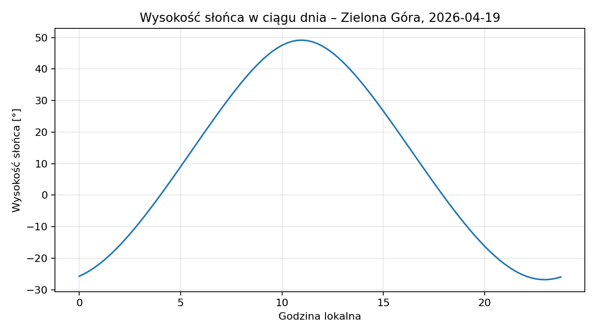
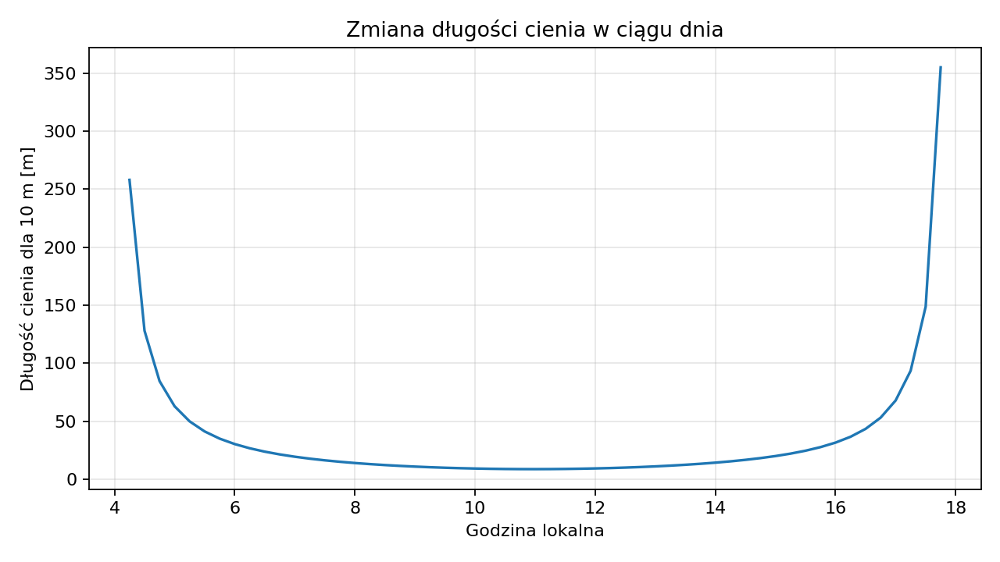
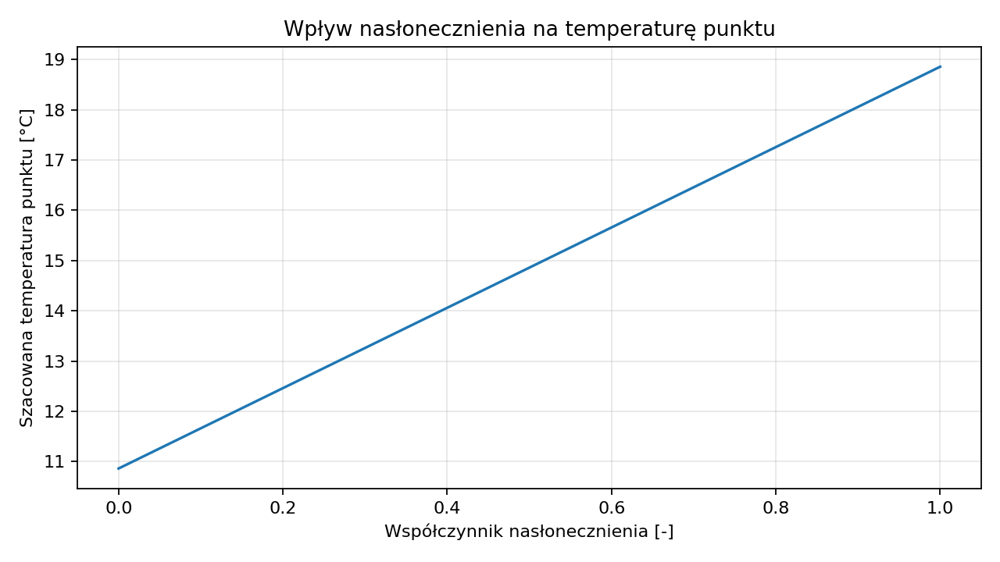
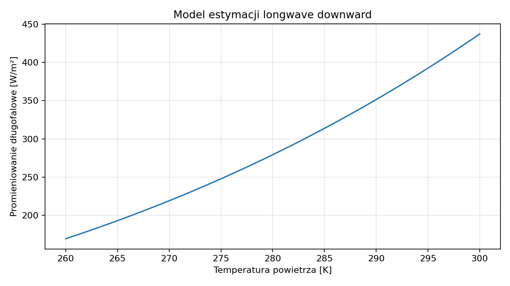

1. Zakres modelu
Astronomia
- pozycja słońca i księżyca,
- kierunek cienia,
- wschód i zachód słońca,
- wektor promieni słonecznych.
Geometria sceny
- tor modelowany jako pierścień eliptyczny,
- środek toru jako osobna elipsa,
- przeszkody 3D jako pudełka AABB,
- siatka punktów na powierzchni.
Pogoda
- temperatura, opad, zachmurzenie,
- wilgotność, wiatr, ciśnienie,
- promieniowanie shortwave i longwave,
- łączenie Open-Meteo i lokalnych CSV.
Eksport
- dane punktowe dla każdej klatki,
- forcingi atmosferyczne,
- stan cienia i ekspozycji,
- szacowana temperatura punktu.
2. Konwersja czasu i budowa stanu klatki
Funkcja decimal_hour_to_hms(hour_value) zamienia godzinę dziesiętną na format czasu:
hour = total_seconds // 3600
minute = (total_seconds mod 3600) // 60
second = total_seconds mod 60
Funkcja local_datetime_to_utc buduje czas lokalny i zamienia go na UTC. To jest ważne, bo obliczenia astronomiczne wymagają spójnego czasu odniesienia.
Funkcja build_frame_state składa pełen stan pojedynczej klatki:
{
dt_utc,
dt_local,
sun_info,
shadow_info,
moon_info,
day_info,
sun_vector
}
3. Pozycja słońca i cień
Projekt wykorzystuje bibliotekę suncalc, a potem przelicza azymut na klasyczny bearing kompasowy:
Kierunek cienia wyznaczany jest jako kierunek przeciwny do kierunku słońca:
Długość cienia dla obiektu wysokości H i wysokości słońca α:


4. Wektor słońca
Współrzędne wektora słońca w układzie x = wschód, y = północ, z = góra:
y = cos(a) · cos(b)
z = sin(a)
Następnie wektor jest normalizowany:
5. Geometria toru
Tor i środek toru są oparte o elipsy. Punkt należy do elipsy, jeżeli:
Tor jest pierścieniem eliptycznym:
6. Algorytm cienia – przecięcie promienia z przeszkodą
Przeszkody są modelowane jako pudełka osiowo wyrównane. Dla każdej osi obliczane są przedziały wejścia i wyjścia promienia:
t2 = (box_max[i] - origin[i]) / dir[i]
Jeżeli wspólny przedział istnieje, promień przecina przeszkodę i punkt trafia do cienia. Funkcja compute_light_map wykonuje to dla całej siatki punktów.
7. Forcingi atmosferyczne i ich konwersje
| Zmienna | Jednostka eksportu | Konwersja |
|---|---|---|
air_temperature_k | K | T[K] = T[°C] + 273.15 |
precipitation_m_per_s | m/s | m/s = (mm/h) / 3_600_000 |
air_pressure_pa | Pa | Pa = hPa · 100 |
relative_humidity | ułamek [0,1] | RH = RH[%] / 100 |
cloud_cover | ułamek [0,1] | cloud_fraction = okta/8 albo %/100 |
8. Model ekspozycji słonecznej punktu
Dla punktu na torze liczony jest wskaźnik nasłonecznienia:
shade_factor = 0 dla cienia, 1 dla słońca
rain_factor = min(rain_mm_h / 4, 1)
solar_factor = base_solar · shade_factor · (1 - 0.75 · cloud_fraction) · (1 - 0.35 · rain_factor)
Finalny zapis do CSV:
9. Model temperatury punktu
Obecny model jest uproszczonym wskaźnikiem porównawczym:

To nie jest pełny model fizyczny powierzchni. To wskaźnik analityczny do porównywania punktów i stanów pogodowych.
10. Naprawa longwave_down_w_per_m2
Jeżeli lokalne źródło ma wartość, projekt zapisuje ją bezpośrednio. Jeżeli nie ma wartości, stosowana jest estymacja promieniowania długofalowego w dół na podstawie temperatury powietrza, wilgotności i zachmurzenia.
Wykorzystany został model emisyjności nieba z korektą zachmurzenia:
e_a = RH · e_s
ε_clear = 1.24 · (e_a / T_k)1/7
ε_all_sky = min(1, ε_clear · (1 + 0.22 · cloud_fraction²))
L↓ = ε_all_sky · σ · T_k⁴
gdzie σ = 5.670374419 · 10⁻⁸ W·m⁻²·K⁻⁴.

11. Co trafia do CSV po symulacji
Aktualny eksport obejmuje zarówno forcingi atmosferyczne, jak i pola analityczne sceny:
frame_local_time, date, time, x, y, point_type, is_shaded, solar_exposure_pct, air_temperature_c, air_temperature_k, estimated_point_temperature_c, rain_mm_h, precipitation_m_per_s, cloud_cover, cloud_unit, cloud_cover_raw, cloud_unit_raw, relative_humidity, wind_speed_m_per_s, air_pressure_pa, shortwave_down_w_per_m2, longwave_down_w_per_m2, longwave_source